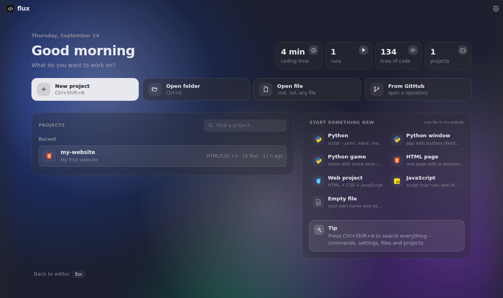

Code. Run. Create.
A small, modern code editor. Run your code with one click, see your website live while you type, and get help from AI – without setting anything up.

Everything you need, nothing you don't
Flux is made for learning and building – from your first print() to a full website.
One-click Run
Press F5 to run Python, JavaScript, TypeScript, Java, C/C++, C#, Go, Rust and more. Missing languages install themselves.
Live Server
Your website next to the code, reloading on save. Preview as phone or tablet, or open it on your real phone with a QR code.
Claude AI built in
Ask about your code, fix errors or plan your to-dos. Claude Desktop and Cursor can work with your projects too.
Smart editor
Autocomplete and error checking for Python, HTML, CSS and JavaScript, Emmet, snippets and errors right on the line.
Work together
Friends on the same Wi-Fi see who has which file open and what they are typing – live, without the internet.
Make it yours
Themes, colors, fonts, cursors, your own wallpaper, plugins – and a power saving mode for slower PCs.
See your website change as you type
Live Server shows your page right next to the code.
- Alt + click any element and Flux jumps to its line in the HTML.
- JavaScript errors appear on the page with a Show in Flux button.
- Phone, tablet or laptop frames – rotate them, take a screenshot.
- Scan a QR code to open the page on your phone.

Your languages, your way
Flux keeps its installer small – programming languages download from their official sources only when you pick them.
Start coding in a minute
Download, run the installer, pick your languages – done.